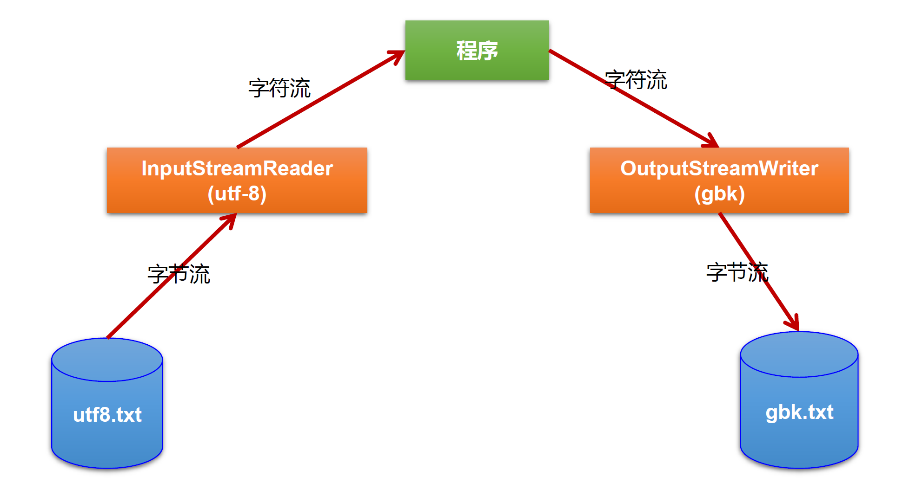
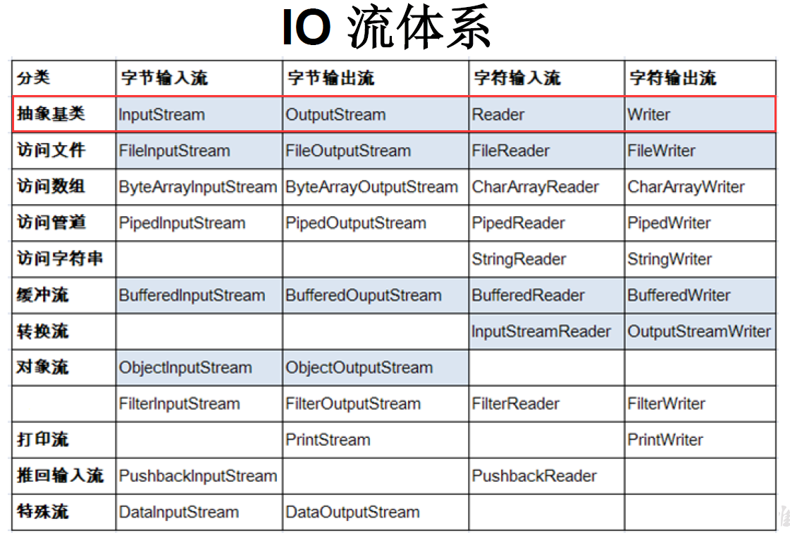

19IO流
一、File类的使用¶
1. File 类的理解¶
- File 类的一个对象，代表==一个文件或一个文件目录==( 俗称：文件夹)。(目录也是一种特殊的文件)
- File 类声明在java.io 包下。
<java.io.File> - File 类中涉及到关于文件或文件目录的==创建==、删除、重命名、修改时间、==文件大小==等方法，并未涉及到写入或读取文件内容的操作。如果需要读取或写入文件内容必须使用IO 流来完成。
- 想要在 Java 程序中表示一个真实存在的文件或目录，那么必须有一个 File 对象，但是 Java程序中的一个 File 对象，可能没有一个真实存在的文件或目录。
- 后续File 类的对象常会作为==参数传递到流的构造器==中，指明读取或写入的" 终点"。
2. File的实例化¶
-
常用构造器
-
路径
- 路径的分类
1. 相对路径(Path)：相较于某个路径下，指明的路径。 2. 绝对路径(AbsolutePath)：包含盘符在内的文件或文件目录的路径。
说明：
1. IDEA中：
* 如果使用==JUnit==中的单元测试方法测试，相对路径即为当前的==Module(模块)==下。 * 如果使用==main()==测试，相对路径即为当前的==Project(项目)==下。2. Eclipse中：
* 不管使用单元测试方法还是使用main()测试，相对路径都是当前的Project下。
- 路径的分类
-
路径分隔符
-
Windows和DOS系统默认使用
"\"来表示 -
UNIX和URL使用
"/"来表示 -
Java程序支持跨平台运行，因此路径分隔符要慎用。
为了解决这个隐患，File类提供了一个常量：
public static final String separator。这个常量会根据操作系统，动态的提供分隔符。
-
3. File类的常用方法¶
-
File类的获取功能
public String getAbsolutePath() ：获取绝对路径 public String getPath() ：获取路径 (是构造参数中的路径) public String getName() ：获取文件名 public String getParent() ：获取上层文件目录路径。若无，返回 null public long length() ：获取文件长度（即：字节数）。不能获取目录的长度。 public long lastModified() ：获取最后一次的修改时间，毫秒值如下的两个方法适用于文件目录：
-
File类的重命名功能
- 注意：
oldFile.renameTo(newFile)为例：要想保证返回true需要oldFile在硬盘中是存在的，且newFile不能在硬盘中存在。
- 可以做到移动文件, 并重命名
- 当文件夹空时, 可以重命名文件夹
- 注意：
-
File类的判断功能
-
File类的创建功能 (创建硬盘中对应的文件或文件目录)
-
File类的删除功能 (删除磁盘中的文件或文件目录)
删除注意事项：Java中的删除不走回收站。
4.内存解析¶

二、 IO流概述¶
1. 简述¶
- IO 是 Input/Output 的缩写，I/O 技术是非常实用的技术，用于处理设备之间的数据传输。如读/写文件，网络通讯等。
- Java程序中，对于数据的输入输出操作以 “流(stream)” 的方式进行。
Java.IO包下提供了各种“流”类和接口，用以获取不同种类的数据，并通过标准的方法输入或输出数据。
2. 流的分类¶
-
数据的流向：输入流、输出流
- 输入 input:读取外部数据（磁盘、光盘等存储设备的数据）到程序（内存）中。
- 输出 output:将程序（内存）数据输出到磁盘、光盘等存储设备中。
-
操作数据单位：字节流(8 bit)、字符流(16 bit)
- 对于非文本文件(
.jpg,.mp3,.mp4,.avi,.doc,.ppt,...)，使用字节流处理
- 对于文本文件(
.txt,.java,.c,.cpp)，使用字符流(char)处理
- 对于非文本文件(
-
流的角色：节点流、处理流
-
节点流：直接从数据源或目的地读写数据。

-
处理流：不直接连接到数据源或目的地，而是==“连接”在已存在的流==（节点流或处理流）之上，通过对数据的处理为程序提供更为强大的读写功能。

-
-
图示：

3. IO流体系分类¶
-
总体分类

-
常用的几个IO流结构
| 抽象基类 | 节点流（或文件流） | 缓冲流（处理流的一种） |
|---|---|---|
| InputStream | FileInputStream (read(byte[] buffer)) | BufferedInputStream (read(byte[] buffer)) |
| OutputStream | FileOutputStream (write(byte[] buffer,0,len) | BufferedOutputStream (write(byte[] buffer,0,len) / flush() |
| Reader | FileReader (read(char[] cbuf)) | BufferedReader (read(char[] cbuf) / readLine() |
| Writer | FileWriter (write(char[] cbuf,0,len) | BufferedWriter (write(char[] cbuf,0,len) / flush() |
-
对抽象基类的说明
抽象基类 字节流 字符流 输入流 InputStream Reader 输出流 OutputStream Writer - 说明: Java的IO流共涉及40多个类, 实际上非常规则, 都是从这个四个抽象基类派生的
- 由这四个类派生出的子类名称都是以其父类名称作为后缀
InputStream & Reader¶
-
总: InputStream和Reader是所有输入流的基类
-
InputStream : 典型实现类: FileInputStream
int read()
从输入流中读取数据的下一个字节。返回0到255范围内的int字节值。如果因为已经到达流末尾而没有可用的字节，则返回值-1
int read(byte[] b)
从此输入流中将最多b.length个字节的数据读入一个byte数组中。
返回实际读取的字节数。如果因为已经到达流末尾而没有可用的字节，则返回值-1
int read(byte[] b,int off,int len)
将输入流中最多len个数据字节读入byte数组。尝试读取len个字节，但读取的字节也可能小于该值。
返回实际读取的字节数。如果因为流位于文件末尾而没有可用的字节，则返回值-1
- Reader : 典型实现类: FileReader
int read()
读取单个字符。作为整数读取的字符，范围在0到65535之间（0x00-0xffff）(2个字节的 Unicode码)，如果已到达流的末尾，则返回-1。
int read(byte[] b)
将字符读入数组。
返回实际读取的字节数。如果因为流位于文件末尾而没有可用的字节，则返回值-1
int read(byte[] b,int off,int len)
将字符读入数组的某一部分。存到数组cbuf中，从off处开始存储，最多读len个字符。
返回实际读取的字节数。如果因为流位于文件末尾而没有可用的字节，则返回值-1
public void close throws IOException{}
关闭此输入流, 并释放与该关联的所有系统资源
- 程序中打开的文件IO资源不属于内存里的资源，垃圾回收机制无法回收该资源，所以==应该显式关闭文件IO资源==。
-
FileInputStream 从文件系统中的某个文件中获得输入字节。
FileInputStream 用于读取非文本数据之类的原始字节流。要读取字符流，需要使用 FileReader。
OutputSteam & Writer¶
-
总述
- OutputStream 和 Writer也非常相似
void write(int b/int c); void write(byte[] b/char[] cbuf); void write(byte[] b/char[] buff,int off,int len); void flush(); void close();- 因为字符流直接以字符作为操作单位，所以 Writer可以用==字符串来替换字符数组==，即以 String对象作为参数
- FileOutputStream 从文件系统中的某个文件中获得输出字节。FileOutputstream 用于写出非文本数据之类的原始字节流。要写出字符流，需要使用 FileWriter
-
OutputStream
void write(int b) 将指定的字节写入此输出流。 write的常规协定是：向输出流写入一个字节。要写入的字节是参数b的八个低位。b的24个高位将被忽略。即写入0~255范围的数据 void write(byte[] b) 将b.length个字节从指定的byte数组写入此输出流。 write(b)的常规协定是：应该与调用wite(b,0,b.length)的效果完全相同。 void write(byte[] b,int off,int len) 将指定byte数组中从偏移量off开始的len个字节写入此输出流。 public void flush()throws IOException 刷新此输出流并强制写出所有缓冲的输出字节，调用此方法指示应将这些字节立即写入它们预期的目标。 public void close() throws IOException 关闭此输岀流并释放与该流关联的所有系统资源。 -
Write
void write(int c) 写入单个字符。要写入的字符包含在给定整数值的16个低位中，16高位被忽略。即写入0到65535之间的 Unicode码。 void write(char[] cbuf) 写入字符数组 void write(char[] cbuf,int off,int len) 写入字符数组的某一部分。从off开始，写入len个字符 void write(String str) 写入字符串。 void write(String str,int off,int len) 写入字符串的某一部分。 void flush() 刷新该流的缓冲，则立即将它们写入预期目标。 public void close throws IOException{} 关闭此输出流并释放与该流关联的所有系统资源
4. 输入、输出标准化过程¶
-
输入过程
① 创建 File 类的对象，指明读取的数据的来源。（要求此文件一定要存在）
② 创建相应的输入流，将 File 类的对象作为参数，传入流的构造器中
③ 具体的读入过程：创建相应的
byte[]或char[]。④ 关闭流资源
-
① 创建 File 类的对象，指明写出的数据的位置。（不要求此文件一定要存在）
② 创建相应的输出流，将 File 类的对象作为参数，传入流的构造器中
③ 具体的写出过程：
write(char[]/byte[] buffer,0,len)④ 关闭流资源
注意：程序中出现的异常需要使用 try-catch-finally 处理。(这是为了保证发生异常时, 也能调用close关闭流资源)
三、 节点流(文件流)¶
1. 文件字符流 FileReader 和 FileWriter 的使用¶
-
文件的输入: 从文件读入到内存(程序)中
-
步骤:
1. 建立一个流对象，将已存在的一个文件加载进流
FileReader fr = new FileReader(new File("hello. txt"));2. 创建一个临时存放数据的数组char[] charBuffer = new char[1024];3. 调用流对象的读取方法将流中的数据读入到数组中。fr.read(charBuffer);(返回读入的长度) 4. 关闭资源。fr.close(); -
```java @Test public void testFileReader1() { FileReader fr = null; try { File file = new File("hello.txt");
fr = new FileReader(file); //每一次返回charBuffer数组中字符的个数, 如果达到文件末尾, 返回-1 char[] charBuffer = new char[5]; int len; while ((len = fr.read(charBuffer)) != -1) { //方式1 数组直接输出// for (int i = 0; i < len; i++) { // System.out.print(charBuffer[i]); // } //方式2 转化为String String str = new String(charBuffer, 0, len); System.out.print(str); } } catch (IOException e) { throw new RuntimeException(e); } finally { if (fr != null) { try { fr.close(); } catch (IOException e) { throw new RuntimeException(e); } } } } ```
-
注意:
1. read的理解
2. 异常的处理: 为保证流资源一定可以执行关闭操作, 采用
try-catch-finally处理异常3. 读入的文件一定要存在，否则就会报
FileNotFoundException。
-
-
文件的输出: 从内存（程序）到硬盘文件中
-
步骤
1. 创建流对象，建立数据存放文件
File Writer fw = new File Writer(new File("Test.txt"))2. 调用流对象的写入方法，将数据写入流fw.write("HelloWord")3. 关闭流资源，并将流中的数据清空到文件中。fw.close(); -
```java @Test public void testFileWriter() throws IOException { //1. 提供File类的对象, 指名写出到的文件 File file = new File("FileWriterTest.txt");
//2. 提供FileWriter的对象, 用于数据的写出 FileWriter fw = new FileWriter(file); FileWriter fw = new FileWriter(file,(append:) false); //append default false, 意为覆盖文件 //append为true, 则是在文件后面添加 fw.write("Hello\n"); fw.write("world"); fw.close();} ```
-
注意:
输出操作, 对应的File可以不存在, 不会报异常
* FIle对应的硬盘中的文件如果不存在, 在输出过程中, 会自动创建此文件 * FIle对应的硬盘中的文件如果存在 * 如果流使用的构造器为
FileWriter(file, false)/File(file), 则会对文件进行覆盖 * 如果流使用的构造器为FileWriter(file, true), 则在原文件末尾进行流输出
-
-
使用例: 使用FIleReader和FileWriter进行文件的复制
2. 文件字节流 FileInputStream 和 FileOutputStream 的使用¶
- 文件字节流的操作与字符流类似, 区别在于实例化对象操作和数据类型不同
3. 注意点¶
-
定义路径时，可以用
/或\\(转义字符的'\')。 -
输出操作，对应的 File 可以不存在的。并不会报异常。
File 对应的硬盘中的文件如果不存在，在输出的过程中，会自动创建此文件。
File 对应的硬盘中的文件如果存在：
- 如果流使用的构造器是：
FileWriter(file,false)/FileWriter(file):对原有文件的覆盖。 - 如果流使用的构造器是：
FileWriter(file,true):不会对原有文件覆盖，而是在原有文件基础上追加内容。
- 如果流使用的构造器是：
-
读取文件(Reader / InputStream)时，必须保证==文件存在==，否则会报异常。
输出文件(Writer / OutputStream) 是, 文件可以不存在, 但是文件==路径上的文件夹必须存在==, 否则报异常
-
对于文本文件(
.txt,.java,.c,.cpp)，使用字符流处理对于非文本文件(
.jpg,.mp3,.mp4,.avi,.doc,.ppt,...)，使用字节流处理
四、 缓冲流¶
1. 缓冲流中使用的类¶
- 字节流:
BufferedInputStream&BufferedOutputStream
- 字符流:
BufferedReader&BufferedWriter
2. 引入缓冲流的目的¶
-
作用：提供流的读取、写入的速度
-
能够提高读写速度的原因：内部提供了一个缓冲区。(默认情况下是8kb 1024*8)

3.缓冲流的使用¶
-
当读取数据时，数据按块读入缓冲区，其后的读操作则直接访问缓冲区。
-
当使用
BufferedInputStream读取字节文件时，BufferedInputStream会一次性从文件中读取8192个(8Kb)，存在缓冲区中，直到缓冲区装满了，才重新从文件中读取下一个8192个字节数组。 -
向流中写入字节时，不会直接写到文件，先写到缓冲区中直到缓冲区写满，
BufferedOutputStream才会把缓冲区中的数据一次性写到文件里。(使用方法flush()可以强制将缓冲区的内容全部写入输出流。) -
关闭流的顺序和打开流的顺序相反。只要关闭最外层流即可，关闭最外层流也会相应关闭内层节点流。
-
flush()方法的使用：手动将 buffer 中内容写入文件。 -
如果是带缓冲区的流对象的
close()方法，不但会关闭流，还会在关闭流之前刷新缓冲区，关闭后不能再写出。
4.使用例:¶
-
使用 BufferInputStream 和 BufferOutputStream 实现非文本文件的复制
public class BufferedStreamTest { public static void main(String[] args) throws IOException { //1. 文件 File srcFile = new File("Chap19_IOStream\\testFile\\mio.png"); File desFile = new File("Chap19_IOStream\\testFile\\mio_copy2.png"); //2. 流 //节点流 FileInputStream fis = new FileInputStream(srcFile); FileOutputStream fos = new FileOutputStream(desFile); //缓冲流 BufferedInputStream bis = new BufferedInputStream(fis); BufferedOutputStream bos = new BufferedOutputStream(fos); //缓冲流套在节点流上, 这也说明缓冲流是一种处理流 //复制 byte[] buffer = new byte[10]; int len; while ((len = bis.read(buffer)) != -1) { bos.write(buffer, 0, len); } //先关闭外层的流, 再关闭内层的流 //关闭外层流, 内层流会自动关闭 bis.close(); bos.close(); //fis.close(); fos.close(); } }
-
使用BufferedReader和BufferWriter实现文本文件的复制
public class BufferedReaderWriterTest { public static void main(String[] args) { BufferedReader br = null; BufferedWriter bw = null; try { br = new BufferedReader(new FileReader( new File("Chap19_IOStream\\testFile\\copyTest_src.txt"))); bw = new BufferedWriter(new FileWriter( new File("Chap19_IOStream\\testFile\\copyTest_des2.txt"))); //复制方式一 使用char数组 char[] buffer = new char[10]; int len; while ((len = br.read(buffer)) != -1) { bw.write(buffer, 0, len); } //复制方式二 使用String String data; while ((data = br.readLine()) != null) { bw.write(data); } } catch (IOException e) { throw new RuntimeException(e); } finally { try { if (br != null) br.close(); if (bw != null) bw.close(); } catch (IOException e) { throw new RuntimeException(e); } } } }
五、 转换流¶
1. 简介¶
- 转换流提供了在字节流和字符流之间的转换
- Java API提供了两个转换流：
InputstreamReader：将Inputstream转换为ReaderOutputStreamWriter：将Writer转换为OutputStream
- 字节流中的数据都是字符时，转成字符流操作更高效。
- 很多时候我们使用转换流来处理==文件乱码==问题。实现==编码==和==解码==的功能。
1.1InputStreamReader¶
-
InputStreamReader: 将一个字节的输入流转换为字符的输入流 -
解码：字节、字节数组 --->字符数组、字符串
-
构造器：
public InputStreamReader(InputStream in)
public InputStreamReader(Inputstream in,String charsetName)//可以指定编码集
1.2 OutputStreamWriter¶
-
OutputStreamWriter: 将一个字符的输出流转换为字节的输出流 -
编码：字符数组、字符串 ---> 字节、字节数组
-
构造器：
public OutputStreamWriter(OutputStream out)
public OutputStreamWriter(Outputstream out,String charsetName)//可以指定编码集
-
图示

2. 使用例¶
//综合使用InputStreamReader和OutputStreamWriter
@Test
public void test() {
InputStreamReader isr = null;
OutputStreamWriter osw = null;
try {
FileInputStream fis = new FileInputStream("testFile\\dbcp_UTF-8.txt"); //使用参数为String的构造器
FileOutputStream fos = new FileOutputStream("testFile\\dbcp_gbk.txt"); //使用参数为String的构造器
isr = new InputStreamReader(fis, "UTF-8");
osw = new OutputStreamWriter(fos, "gbk");
char[] charBuffer = new char[10];
int len;
while ((len = isr.read(charBuffer)) != -1) {
osw.write(charBuffer, 0, len);
}
} catch (IOException e) {
throw new RuntimeException(e);
} finally {
try {
if (isr != null) {
isr.close();
}
} catch (IOException e) {
throw new RuntimeException(e);
}
try {
if (osw != null) {
osw.close();
}
} catch (IOException e) {
throw new RuntimeException(e);
}
}
}
3. 编码集¶
-
常见编码表
-
ASCII：美国标准信息交换码。 用一个字节的7位可以表示。
-
ISO8859-1：拉丁码表。 欧洲码表用一个字节的8位表示。
GB2312：中国的中文编码表。==最多==两个字节编码所有字符
GBK：中国的中文编码表升级，融合了更多的中文文字符号。最多两个字节编码
-
Unicode：国际标准码，融合目前人类使用的所字符。为每个字符分配唯一的字符码。所有的文字都用两个字节来表示。UTF-8：变长的编码方式，可用==1-4个字节==来表示一个字符。
-
-
编码表说明
-
编码表历史

* ANSI: 美国国家标准学会（AMERICAN NATIONAL STANDARDS INSTITUTE）
-
Unicode的缺陷
1. 英文字母用一个字节表示就足够了, 全都用两个字节会浪费空间
2. 如何区分Unicode和ASCII (计算机如何识别两个字节是表示一个符号还是两个符号)
-> 如果使用最高位0/1来判断一个字节/两个字节, 表达数从2^16^降为2^15^, 不够表示所有字符 -
UTF(UCS Transfer Format) 标准
* UTF-8:每次8个位传输数据，而UTF-16就是每次16个位。这是为传输而设计的编码，并使编码无国界，这样就可以显示全世界上所有文化的字符了。
* 具体实现方式(以UTF-8为例)
 将Unicode编码值的二进制形式, 按照UTF-8编码方式, 填到'x'位置存储 
- Unicode只是定义了一个庞大的、全球通用的字符集，并为每个字符规定了唯确定的编号，具体存储成什么样的字节流，取决于字符编码方案。推荐的Unicode编码是UTF-8和UTF-16。
-
-
编码应用
-
编码：字符串-->字节数组
解码：字节数组-->字符串
-
转换流的编码应用
- 可以将字符按指定编码格式存储
- 可以对文本数据按指定编码格式来解读
- 指定编码表的动作由构造器完成
-
使用要求：
客户端/浏览器端 <----> 后台(java,GO,Python,Node.js,php) <----> 数据库
要求前前后后使用的字符集都要统一：UTF-8
-
六、输出流<了解>¶
-
简介
System.in:标准的输入流，默认从键盘输入
public final static InputStream in = null;, 为InputStreamSystem.out:标准的输出流，默认从控制台输出
public final static PrintStream out = null;, 为PrintStream -
主要方法
System类的setIn(InputStream is)方式重新指定输入的流System类的setOut(PrintStream ps)方式重新指定输出的流。 -
使用例
- 从键盘输入字符串，要求将读取到的整行字符串转成大写输出。然后继续进行输入操作，直至当输入
e或者exit时，退出程序。
-
方法一: Scanner实现。用next获取一个字符串, 然后用toUpperCase()方法转换
public class toUpperWithScanner { public static void main(String[] args) { Scanner scanner = new Scanner(System.in); String str; while ((!(str = scanner.next()).equalsIgnoreCase("e")) && !str.equalsIgnoreCase("exit")) { //比较时忽略大小写 System.out.println(str.toUpperCase()); } System.out.println("已退出"); } } //写法不是很好, 建议看方法二的比较的写法
-
方法二: System.in实现。System.in ---> 转换流 ---> BufferedReader的readLine()
public class toUpperWithSystemIn { public static void main(String[] args) { BufferedReader br = null; try { InputStreamReader isr = new InputStreamReader(System.in); //转化为字符流 br = new BufferedReader(isr); while (true) { System.out.println("请输入字符串"); String data = br.readLine(); if ("e".equalsIgnoreCase(data) || "exit".equalsIgnoreCase(data)) { System.out.println("程序结束"); break; } System.out.println(data.toUpperCase()); } } catch (IOException e) { throw new RuntimeException(e); } finally { if (br != null) { try { br.close(); } catch (IOException e) { throw new RuntimeException(e); } } } } }
- 练习
- Create a program named MyInput.java: Contain the methods for reading int, double, float, boolean, short, byte and String values from the keyboard.
- 相当于手动实现Scanner(System.in)
七、打印流<了解>¶
- 作用: 实现将 基本数据类型 的数据格式转化为 字符串 输出 (只有输出类型的流)
-
打印流分类：
PrintStream和PrintWriter- 提供了一系列重载 的 print() 和 println() 方法 ，用于多种数据类型的输出
-
注意点
- PrintStream 和 PrintWriter 的输出不会抛出
IOException异常 - PrintStream 和 PrintWriter 有自动 flush 功能
- PrintStream 打印的所有字符都使用平台的默认字符编码==转换为字节==。 在需要写入字符而不是写入字节的情况下，应该使用 PrintWriter 类 。
- System.out 返回的是 PrintStream 的实例
- PrintStream 和 PrintWriter 的输出不会抛出
-
使用例
public class printStreamTest { public static void main(String[] args) { PrintStream ps = null; try { FileOutputStream fos = new FileOutputStream("Chap19_IOStream\\testFile\\dbcp_UTF-8.txt"); // 创建打印输出流,设置为自动刷新模式(写入换行符或字节 '\n' 时都会刷新输出缓冲区) ps = new PrintStream(fos, true); if (ps != null) { // 把标准输出流(控制台输出)改成输出到文件 System.setOut(ps); //将System.out改为自定义的PrintStream } for (int i = 0; i <= 255; i++) { // 输出ASCII字符 System.out.print((char) i); if (i % 50 == 0) { // 每50个数据一行 System.out.println(); // 换行 } } } catch (FileNotFoundException e) { e.printStackTrace(); } finally { if (ps != null) { ps.close(); } } } }
八、 数据流<了解>¶
-
作用:用于==读取==或==写出==基本数据类型的变量/字符串
-
FileWrite的write只能输出字符串 / 字符数组


-
FileOutput的write只能输出字节


-
-
数据流分类:
DataInputStream和DataOutputStream-
DataInputStream 中的方法
- DataOutputStream的方法: 将DataInputStream的
readxxx()改为writexxx()
-
九、 对象流¶
1. 简介¶
-
对象流主要分为
ObjectInputStream和ObjectOutputStream用于存储和读取 基本数据类型 数据或 对象 的处理流。
它的强大之处就是可以把 Java 中的对象写入到数据源中，也能把对象从数据源中还原回来。
-
作用
ObjectOutputStream: 内存中的对象--->存储中的文件、通过网络传输出去 (序列化过程)ObjectInputStream: 存储中的文件、通过网络接收过来 --->内存中的对象 (反序列化过程)
2. 对象的序列化¶
-
总述: 对象序列化机制允许把内存中的==Java对象==转换成平台无关的==二进制流==，从而允许把这种二进制流持久地保存在磁盘上，或通过网络将这种二进制流传输到另一个网络节点。(当其它程序获取了这种二进制流，就可以恢复成原来的Java对象)
-
序列化的好处:
可将任何实现了Serializable接口的对象转化为==字节数据==，使其在保存和传输时可被还原。
-
序列化的重要性:
序列化是RMI (Remote Method Invoke-远程方法调用) 过的参数和返回值都必须实现的机制，RMI是JavaEE的基础。因此序列化机制是JavaEE平台的基础。
-
如何实现序列化机制:
-
如果需要让某个对象支持序列化机制，则必须让对象所属的类及其属性是可序列化的，为了让某个类是可序列化的，该类必须实现如下两个接口之一。否则，会抛出
NotserializableEXception异常-
Serializable-Externalizable -
凡是实现Serializable接口的类都有一个表示序列化版本标识符的静态变量：
*
private static final long serialVersionUID;*
serialVersionUID用来表明类的不同版本间的兼容性。简言之，其目的是以序列化对象进行版本控制，有关各版本反序列化时是否兼容- 如果类没有显示定义这个静态常量，它的值是Java运行时环境根据类的内部细节自动生成的。若类的实例变量做了修改，serialVersionUID可能发生变化。故建议显式声明
-
-
简单来说，Java 的序列化机制是通过在运行时判断类的
serialversionUID来验证版本一致性的。在进行反序列化时，JVM 会把传来的字节流中的serialversionUID与本地相应实体类的serialversionUID进行比较，如果相同就认为是一致的，可以进行反序列化，否则就会出现序列化版本不一致的异常。(InvalidCastException)
3. 自定义可序列化类的对象¶
- 可序列化类的要求
- 需要实现接口:
Serializable（标识接口） - 当前类需要提供一个全局常量:
serialVersionUID（序列版本号） - 除了当前
Person类需要实现Serializable接口之外，还必须保证其==内部所有属性也必须是可序列化==的。（默认情况下，基本数据类型可序列化）
- 需要实现接口:
- 例:
- 补充：
ObjectOutputStream和ObjectInputStream不能序列化static和transient修饰的成员变量
4. 对象流的使用¶
-
序列化代码实现
序列化: 将对象写入磁盘或进行网络传输
要求被序列化对象必须实现序列化
@Test public void testObjectOutputStream(){ ObjectOutputStream oos = null; try { //1.创建对象，创建流 oos = new ObjectOutputStream(new FileOutputStream("object.dat")); //2.操作流 oos.writeObject(new String("我爱北京天安门")); oos.flush(); //刷新操作 oos.writeObject(new Person("王铭",23)); oos.flush(); oos.writeObject(new Person("张学良",23,1001,new Account(5000))); oos.flush(); } catch (IOException e) { e.printStackTrace(); } finally { if(oos != null){ //3.关闭流 try { oos.close(); } catch (IOException e) { e.printStackTrace(); } } } } -
反序列化代码实现
反序列化: 将磁盘的对象数据源读出
@Test public void testObjectInputStream(){ ObjectInputStream ois = null; try { ois = new ObjectInputStream(new FileInputStream("object.dat")); Object obj = ois.readObject(); String str = (String) obj; Person p = (Person) ois.readObject(); Person p1 = (Person) ois.readObject(); System.out.println(str); System.out.println(p); System.out.println(p1); } catch (IOException e) { e.printStackTrace(); } catch (ClassNotFoundException e) { e.printStackTrace(); } finally { if(ois != null){ try { ois.close(); } catch (IOException e) { e.printStackTrace(); } } } }
十、 任意存取文件流¶
RandomAccessFile 的使用
1. 简介¶
-
RandomAccessFile==直接继承==于java.lang.Object类，实现了DataInput和DataOutput接口(与之前讲的四个抽象基类无关)-->
RandomAccessFile既可以作为一个输入流，又可以作为一个输出流 -
RandomAccessFile类支持“随机访问”的方式，程序可以直接跳到文件的任意地方来读、写文件- 支持只访问文件的部分内容
- 可以向已存在的文件后追加内容
-
RandomAccessFile对象包含一个==记录指针==，用以标示当前读写处的位置RandomaccessFile类对象可以自由移动记录指针：long getFilePointer()：获取文件记录指针的当前位置
void seek(long pos)：将文件记录指针定位到pos位置
-
构造器
public RandomAccessFile(File file,String mode)
public RandomAccessFile(String name,String mode)
2. 使用说明¶
-
如果
RandomAccessFile作为输出流时，写出到的文件如果不存在，则在执行过程中==自动创建==。如果写出到的文件存在，则会对原文件==内容进行覆盖==(不是对文件整体覆盖)。（默认情况下，从头覆盖）
-
可以通过相关的操作，实现
RandomAccessFile“插入”数据的效果。借助seek(int pos)方法(移动记录指针) -
mode参数-
创建
RandomAccessFile类实例需要指定一个mode参数，该参数指定RandomAccessFile的访问模式:* r：以只读方式打开
* rw：打开以便读取和写入
* rwd：打开以便读取和写入；同步文件内容的更新
* rws：打开以便读取和写入；同步文件内容和元数据的更新
-
如果模式为只读 r ,则不会创建文件，而是会去读取一个已经存在的文件,读取的文件不存在则会出现异常。如果模式为 rw 读写,文件不存在则会去创建文件，存在则不会创建。
-
3. 作用¶
- 可以用RandomAccessFile 这个类，来实现一个 多线程断点下载 的功能
- 建立两个临时文件 ，一个是与被下载文件大小相同的空文件，另一个是记录文件指针的位置文件，每次暂停的时候，都会保存上一次的指针，然后断点下载的时候，会继续从上一次的地方下载，从而实现断点下载或上传的功能
流的基本应用总结¶
- 流是用来处理数据的。
- 处理数据时，一定要先明确==数据源==，与数据目的地数据源可以是文件，可以是键盘数据; 目的地可以是文件、显示器或者其他设备
- 而流只是在帮助数据进行传输，并对传输的数据进行处理，比如==过滤==处理、==转换==处理等
-
除去
RandomAccessFile类外所有的流都继承于四个基本数据流抽象类InputSteam、OutputSteam、Reader、Writer, 不同的操作流对应的后缀均为四个抽象基类中的某一个
-
不同处理流的使用方式都是标准操作：
- 创建文件对象，创建相应的流
- 处理流数据
- 关闭流
- 用try-catch-finally处理异常
十一、NIO¶
1. Java NIO概述¶
-
什么是NIO
-
Java NIO (New IO, Non-Blocking IO) 是 从 Java 1.4 版本开始引入的一套新的 IO API ，可以替代标准的 Java IO API 。
-
NIO 与原来的 IO 有同样的作用和目的，但是使用的方式完全不同， NIO 支持==面向缓冲区==的 (IO 是面向流的) 、基于通道的 IO 操作。
- NIO 将以更加高效的方式进行文件的读写操作。
- JDK 7.0对 NIO 进行了极大的扩展，增强了对文件处理和文件系统特性的支持，称他为 NIO.2。<常用>
-
-
NIO分类:
Java API 中提供了两套 NIO: 一套是针对标准输入输出 NIO; 另一套就是网络编程 NIO 。
-
java.nio.channels.ChannelFileChannel: 处理本地文件
SocketChannel: TCP 网络编程的客户端的 ChannelServerSocketChannel:TCP 网络编程的服务器端的 ChannelDatagramChannel: UDP 网络编程中发送端和接收端的 Channel
-
2.Path接口 ¶
2.0为什么使用Path¶
- 早期的 Java 只提供了一个
File类来访问文件系统，但File类的功能比较有限，所提供的方法性能也不高。而且，大多数方法在出错时仅返回失败，并不会提供异常信息。 - NIO.2为了弥补这种不足，引入了
Path接口，代表一个平台无关的平台路径，描述了目录结构中文件的位置。Path可以看成是File类的==升级版本==，实际引用的资源也可以不存在。
2.1Path的说明¶
- Path可以替换原有的File类。
- 在以前IO操作都是这样写的：
import java.io.FileFile file = new File("index.html");
- 但在Java7中，我们可以这样写：
import java.nio.file.Path;import java.nio.file.Paths;Path path = Paths.get("index. html");
2.2 Paths¶
-
Paths的使用
Paths类提供的静态get()方法用来获取Path对象：
static Path get(String first， String….more)：用于将多个字符串==串连成路径==
static Path get(URI uri)：返回指定 uri 对应的 Path 路径
-
代码示例
@Test
public void test1(){
Path path1 = Paths.get("hello.txt");//new File(String filepath)
Path path2 = Paths.get("E:\\", "test\\test1\\haha.txt");//new File(String parent,String filename);
Path path3 = Paths.get("E:\\", "test");
System.out.println(path1);
System.out.println(path2);
System.out.println(path3);
}
2.3 常用方法¶
String toString()： 返回调用Path对象的字符串表示形式boolean startsWith(String path): 判断是否以path路径开始boolean endsWith(String path): 判断是否以path路径结束boolean isAbsolute(): 判断是否是绝对路径Path getParent()：返回Path对象包含整个路径，不包含Path对象指定的文件路径Path getRoot()：返回调用Path对象的根路径Path getFileName(): 返回与调用Path对象关联的文件名int getNameCount(): 返回Path根目录后面元素的数量Path getName(int idx): 返回指定索引位置idx的路径名称Path toAbsolutePath(): 作为绝对路径返回调用Path对象Path resolve(Path p):合并两个路径，返回合并后的路径对应的Path对象File toFile(): 将Path转化为File类的对象
代码示例
@Test
public void test2() {
Path path1 = Paths.get("d:\\", "nio\\nio1\\nio2\\hello.txt");
Path path2 = Paths.get("hello.txt");
// String toString() ： 返回调用 Path 对象的字符串表示形式
System.out.println(path1);
// boolean startsWith(String path) : 判断是否以 path 路径开始
System.out.println(path1.startsWith("d:\\nio"));
// boolean endsWith(String path) : 判断是否以 path 路径结束
System.out.println(path1.endsWith("hello.txt"));
// boolean isAbsolute() : 判断是否是绝对路径
System.out.println(path1.isAbsolute() + "~");
System.out.println(path2.isAbsolute() + "~");
// Path getParent() ：返回Path对象包含整个路径，不包含 Path 对象指定的文件路径
System.out.println(path1.getParent());
System.out.println(path2.getParent());
// Path getRoot() ：返回调用 Path 对象的根路径
System.out.println(path1.getRoot());
System.out.println(path2.getRoot());
// Path getFileName() : 返回与调用 Path 对象关联的文件名
System.out.println(path1.getFileName() + "~");
System.out.println(path2.getFileName() + "~");
// int getNameCount() : 返回Path 根目录后面元素的数量
// Path getName(int idx) : 返回指定索引位置 idx 的路径名称
for (int i = 0; i < path1.getNameCount(); i++) {
System.out.println(path1.getName(i) + "*****");
}
// Path toAbsolutePath() : 作为绝对路径返回调用 Path 对象
System.out.println(path1.toAbsolutePath());
System.out.println(path2.toAbsolutePath());
// Path resolve(Path p) :合并两个路径，返回合并后的路径对应的Path对象
Path path3 = Paths.get("d:\\", "nio");
Path path4 = Paths.get("nioo\\hi.txt");
path3 = path3.resolve(path4);
System.out.println(path3);
// File toFile(): 将Path转化为File类的对象
File file = path1.toFile();//Path--->File的转换
Path newPath = file.toPath();//File--->Path的转换
}
3.Files类¶
java.nio.file.Files 用于操作文件或目录的==工具类==
3.1 Files类常用方法¶
-
Path copy(Path src, Path dest, CopyOption … how): 文件的复制要想复制成功，要求
path1对应的物理上的文件存在。path1对应的文件没有要求。
Files.copy(path1, path2, StandardCopyOption.REPLACE_EXISTING);
-
Path createDirectory(Path path, FileAttribute<?> … attr): 创建一个目录要想执行成功，要求
path对应的物理上的文件目录不存在。一旦存在，抛出异常。
Path createFile(Path path, FileAttribute<?> … arr): 创建一个文件
- 要想执行成功，要求
path对应的物理上的文件不存在。一旦存在，抛出异常。
void delete(Path path): 删除一个文件/目录，如果不存在，执行报错
void deleteIfExists(Path path):Path对应的文件/目录如果存在，执行删除.如果不存在，正常执行结束
-
Path move(Path src, Path dest, CopyOption…how): 将src移动到dest位置要想执行成功，
src对应的物理上的文件需要存在，dest对应的文件没有要求。
long size(Path path): 返回path指定文件的大小
代码示例
@Test
public void test1() throws IOException{
Path path1 = Paths.get("d:\\nio", "hello.txt");
Path path2 = Paths.get("atguigu.txt");
// Path copy(Path src, Path dest, CopyOption … how) : 文件的复制
//要想复制成功，要求path1对应的物理上的文件存在。path1对应的文件没有要求。
// Files.copy(path1, path2, StandardCopyOption.REPLACE_EXISTING);
// Path createDirectory(Path path, FileAttribute<?> … attr) : 创建一个目录
//要想执行成功，要求path对应的物理上的文件目录不存在。一旦存在，抛出异常。
Path path3 = Paths.get("d:\\nio\\nio1");
// Files.createDirectory(path3);
// Path createFile(Path path, FileAttribute<?> … arr) : 创建一个文件
//要想执行成功，要求path对应的物理上的文件不存在。一旦存在，抛出异常。
Path path4 = Paths.get("d:\\nio\\hi.txt");
// Files.createFile(path4);
// void delete(Path path) : 删除一个文件/目录，如果不存在，执行报错
// Files.delete(path4);
// void deleteIfExists(Path path) : Path对应的文件/目录如果存在，执行删除.如果不存在，正常执行结束
Files.deleteIfExists(path3);
// Path move(Path src, Path dest, CopyOption…how) : 将 src 移动到 dest 位置
//要想执行成功，src对应的物理上的文件需要存在，dest对应的文件没有要求。
// Files.move(path1, path2, StandardCopyOption.ATOMIC_MOVE);
// long size(Path path) : 返回 path 指定文件的大小
long size = Files.size(path2);
System.out.println(size);
}
3.2 Files类常用方法：用于判断¶
boolean exists(Path path, LinkOption … opts): 判断文件是否存在
-
boolean isDirectory(Path path, LinkOption … opts): 判断是否是目录不要求此
path对应的物理文件存在。
boolean isRegularFile(Path path, LinkOption … opts): 判断是否是文件
-
boolean isHidden(Path path): 判断是否是隐藏文件要求此
path对应的物理上的文件需要存在。才可判断是否隐藏。否则，抛异常。
boolean isReadable(Path path): 判断文件是否可读
boolean isWritable(Path path): 判断文件是否可写
boolean notExists(Path path, LinkOption … opts): 判断文件是否不存在
代码示例
@Test
public void test2() throws IOException{
Path path1 = Paths.get("d:\\nio", "hello.txt");
Path path2 = Paths.get("atguigu.txt");
// boolean exists(Path path, LinkOption … opts) : 判断文件是否存在
System.out.println(Files.exists(path2, LinkOption.NOFOLLOW_LINKS));
// boolean isDirectory(Path path, LinkOption … opts) : 判断是否是目录
//不要求此path对应的物理文件存在。
System.out.println(Files.isDirectory(path1, LinkOption.NOFOLLOW_LINKS));
// boolean isRegularFile(Path path, LinkOption … opts) : 判断是否是文件
// boolean isHidden(Path path) : 判断是否是隐藏文件
//要求此path对应的物理上的文件需要存在。才可判断是否隐藏。否则，抛异常。
// System.out.println(Files.isHidden(path1));
// boolean isReadable(Path path) : 判断文件是否可读
System.out.println(Files.isReadable(path1));
// boolean isWritable(Path path) : 判断文件是否可写
System.out.println(Files.isWritable(path1));
// boolean notExists(Path path, LinkOption … opts) : 判断文件是否不存在
System.out.println(Files.notExists(path1, LinkOption.NOFOLLOW_LINKS));
}
补充：
StandardOpenOption.READ:表示对应的Channel是可读的。StandardOpenOption.WRITE：表示对应的Channel是可写的。StandardOpenOption.CREATE：如果要写出的文件不存在，则创建。如果存在，忽略StandardOpenOption.CREATE_NEW：如果要写出的文件不存在，则创建。如果存在，抛异常
3.3 Files类常用方法：用于操作内容¶
InputStream newInputStream(Path path, OpenOption…how):获取InputStream对象OutputStream newOutputStream(Path path, OpenOption…how): 获取OutputStream对象SeekableByteChannel newByteChannel(Path path, OpenOption…how): 获取与指定文件的连接，how指定打开方式。DirectoryStream<Path> newDirectoryStream(Path path): 打开path指定的目录
代码示例
@Test
public void test3() throws IOException{
Path path1 = Paths.get("d:\\nio", "hello.txt");
// InputStream newInputStream(Path path, OpenOption…how):获取 InputStream 对象
InputStream inputStream = Files.newInputStream(path1, StandardOpenOption.READ);
// OutputStream newOutputStream(Path path, OpenOption…how) : 获取 OutputStream 对象
OutputStream outputStream = Files.newOutputStream(path1, StandardOpenOption.WRITE,StandardOpenOption.CREATE);
// SeekableByteChannel newByteChannel(Path path, OpenOption…how) : 获取与指定文件的连接，how 指定打开方式。
SeekableByteChannel channel = Files.newByteChannel(path1, StandardOpenOption.READ,StandardOpenOption.WRITE,StandardOpenOption.CREATE);
// DirectoryStream<Path> newDirectoryStream(Path path) : 打开 path 指定的目录
Path path2 = Paths.get("e:\\teach");
DirectoryStream<Path> directoryStream = Files.newDirectoryStream(path2);
Iterator<Path> iterator = directoryStream.iterator();
while(iterator.hasNext()){
System.out.println(iterator.next());
}
}